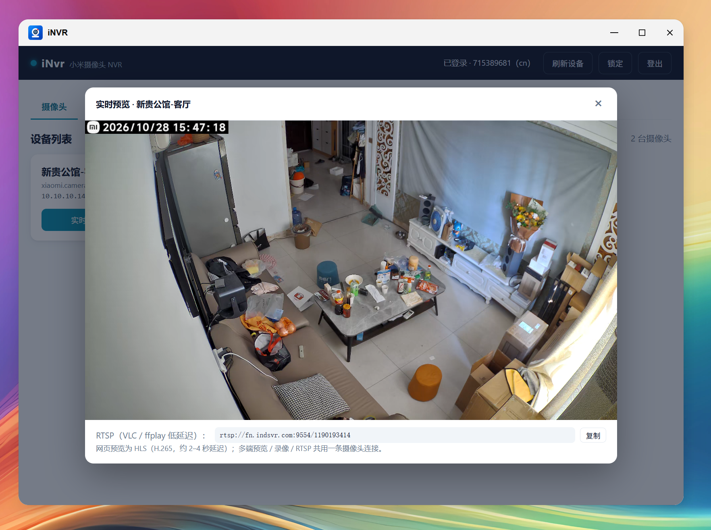
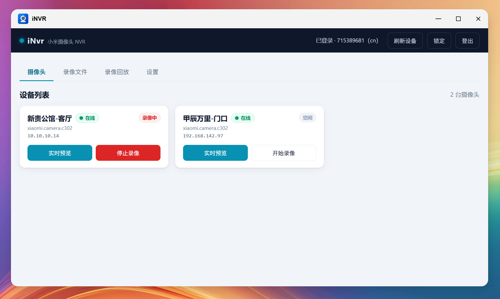

iNvr 是纯 Java 自研的小米摄像头网络录像服务。通过小米私有 miss/mess + CS2 协议直连接入摄像头，向下提供网页实时预览、标准 RTSP、分段录像与时间轴回放——无需刷固件，不依赖云录像，也没有外部流媒体进程。

StreamHub 以引用计数做扇出。网页预览、RTSP 拉流、分段录像任意组合，对摄像头始终只建立一条 CS2 连接；最后一个消费者退出后自动释放，需要时再重连。
一个 fat jar 内嵌 FFmpeg native，Windows / Linux 双平台直接运行，无需安装任何流媒体服务。
仅走小米统一的 miss/mess + CS2 协议，不需要摄像头开启 RTSP/ONVIF，也不依赖云录像；不做 legacy/TUTK 老协议。
Web 端完成登录，支持图形验证码、短信/邮箱二次验证（2FA）；会话凭据 AES-GCM 加密本地存储，重启免密恢复。
设备列表、在线/离线状态、一键实时预览、一键录像、录像管理、时间轴回放，单页完成。
HLS over fMP4（CMAF），视频 HEVC/H.264 原样、音频转 AAC，浏览器原生播放无需插件，约 2–4 秒延迟。
Netty 手写 RTP-over-TCP 服务，rtsp://主机:9554/<did>，VLC / ffplay / 第三方播放器直接拉流（H265/H264 + Opus）。
fMP4 默认 2 分钟一段、按 IDR 边界对齐；边录边播，崩溃/断电只丢最后约 1 个 GOP，不整段报废。
按天时间轴展示录像段，点击任意位置连续播放，支持缩放（全天/6 小时/1 小时）与翻页。
访问密码 PBKDF2 加盐哈希、URL 一键解锁；会话与密码均加密落盘，服务重启后自动续录，显式停止才结束。
浏览器原生播放，无需任何插件。点击主图可放大查看。

点击放大上行只走小米私有协议，下行在 StreamHub 处做单通道扇出。
环境要求：JDK 17 或以上（JDK 21 亦可）、Maven。仓库内置阿里云镜像配置，不污染全局设置。也可以直接下载安装包，跳过构建。
Spring Boot fat jar，内嵌 FFmpeg native（Windows / Linux x86_64 双平台），需自备 JDK 17+，一条 java -jar 即可启动。
| 配置 | 默认值 | 说明 |
|---|---|---|
| HTTP 端口 | 9080 | Web 控制台与 API |
| RTSP 端口 | 9554 | 内嵌 RTSP 下行 |
| 录像目录 | recordings | fMP4 分段存放目录 |
| 分段时长 | 120 秒 | 每个 fMP4 片段时长，按 IDR 对齐 |
| HLS 分片 | 2 秒 / 窗口 6 | 网页预览延迟与缓存 |
| 音频转码 | true | HLS 把 Opus 转 AAC，失败自动降级静音 |
本项目仅用于接入本人自有摄像头，并在局域网 / 受信网络内使用，请勿用于监控他人或违反当地法律法规。
这是一个非官方逆向协议实现，不提供任何可用性保证；小米云端或固件升级可能导致协议失效，需自行评估使用风险。协议实现参考了 go2rtc（MIT，仅作协议蓝本）。